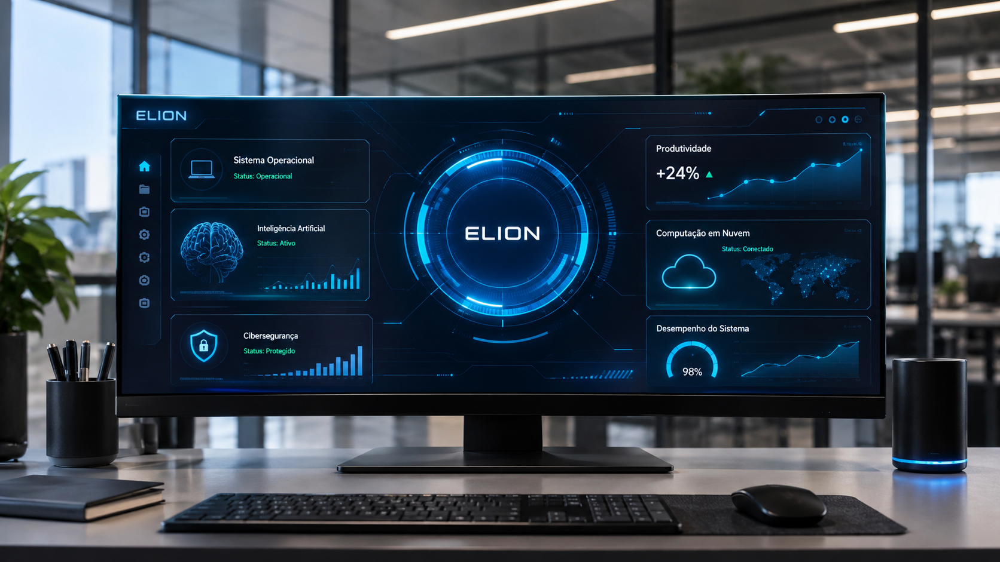

Conhecimento, criatividade e vontade de construir.
Sou Hakim Smart Lopez, estudante de Engenharia da Computação e Arquitetura, empreendedor e fundador da HSL Technologies. Minha trajetória começou com uma curiosidade: descobrir até onde uma boa ideia poderia chegar.
Conheça minha trajetória ↓Uma ideia que se transformou em projeto.
Ainda no ensino médio, comecei a me interessar cada vez mais por tecnologia. Além dos estudos, busquei cursos e conteúdos por conta própria, aprendendo sobre programação, sistemas e desenvolvimento de soluções digitais.
Foi nessa época que convidei meu amigo Dante, conhecido pelo apelido ZION, para desenvolver comigo uma ideia que poderia se tornar algo maior.
Trabalhando juntos, construímos nosso primeiro grande sistema. O projeto deu origem a uma startup e chamou a atenção de empresas e negócios interessados em sua tecnologia.
O sistema foi comercializado por milhões, enquanto a patente permaneceu sob titularidade dos fundadores. Essa experiência marcou o início de uma nova etapa: transformar a experiência adquirida em uma empresa com projetos ainda mais ambiciosos.
HSL Technologies
Fundada por Hakim Smart Lopez e Dante (ZION), a HSL Technologies nasceu da vontade de desenvolver soluções que conectassem diferentes áreas do conhecimento.
Com sede em Belo Horizonte, Minas Gerais, a empresa está em seu início de trajetória. Depois de comercializar seu primeiro sistema, começou a ganhar reconhecimento e a desenvolver novas ideias.
Hoje, a HSL reúne tecnologia, inteligência artificial, engenharia, arquitetura e pesquisa em projetos que buscam explorar novas possibilidades.
Uma equipe, diferentes especialidades.
A HSL começou com dois amigos e cresceu com a chegada de quatro colegas da universidade. Cada integrante contribui com uma perspectiva e uma área de conhecimento diferente.
-
Hakim Smart Lopez
CEO e cofundador · Engenharia da Computação e Arquitetura
Responsável pela direção estratégica, pelo desenvolvimento tecnológico e pela integração entre as diferentes áreas da empresa.
-
Dante (ZION)
Cofundador e diretor de inovação
Criativo, comunicativo e visionário, participa da criação de novas ideias e da exploração de possibilidades para os projetos.
-
Leonardo Martins
Engenharia da Computação · Desenvolvimento e arquitetura de sistemas
Analítico e cuidadoso, trabalha na estruturação de softwares e no desenvolvimento de sistemas.
-
Isabella Costa
Engenharia da Computação · Cibersegurança e computação em nuvem
Estratégica e observadora, atua na proteção de sistemas e na infraestrutura digital.
-
Gabriel Ferreira
Engenharia da Computação · Eletrônica, robótica e automação
Inventivo e curioso, trabalha com integração entre hardware, eletrônica e tecnologia.
-
Valentina Almeida
Arquitetura · Projetos arquitetônicos e estruturas
Criativa e detalhista, contribui com projetos arquitetônicos, estruturas e soluções de design.
ELION
O ELION foi o primeiro grande sistema desenvolvido por Hakim e Dante. A proposta reúne diferentes ferramentas tecnológicas em um mesmo ecossistema.

Um sistema, várias possibilidades.
- Sistema operacional proprietário.
- Plataforma de inteligência artificial.
- Recursos de cibersegurança.
- Aplicativo de produtividade.
- Serviços de computação em nuvem.
O projeto representa o primeiro passo da trajetória tecnológica dos fundadores e a experiência que impulsionou a criação da HSL Technologies.
O próximo desafio.
A equipe trabalha em um novo projeto que conecta robótica, arquitetura, engenharia estrutural e pesquisa e desenvolvimento.
Ainda em fase de desenvolvimento, a iniciativa representa a expansão dos interesses da HSL para além dos sistemas digitais, aproximando software, hardware e soluções para o mundo físico.